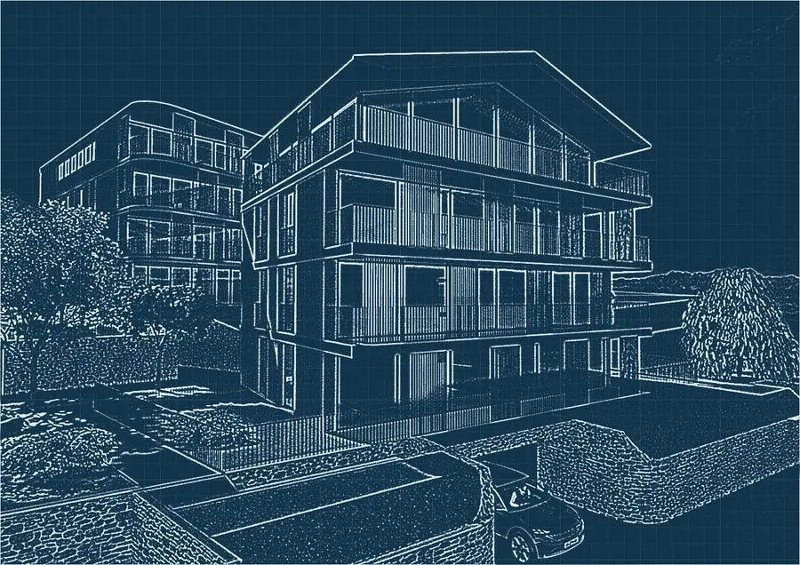
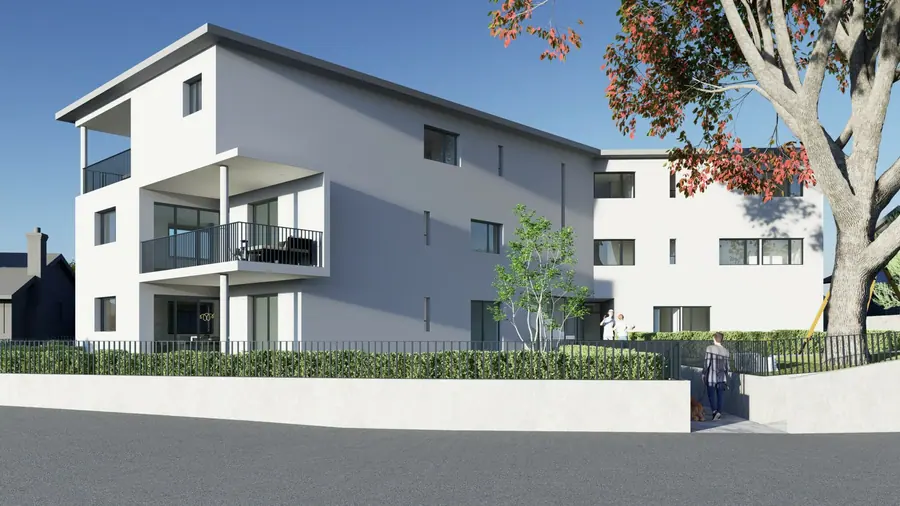
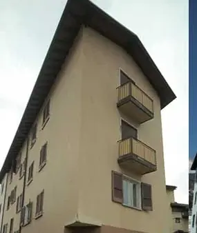
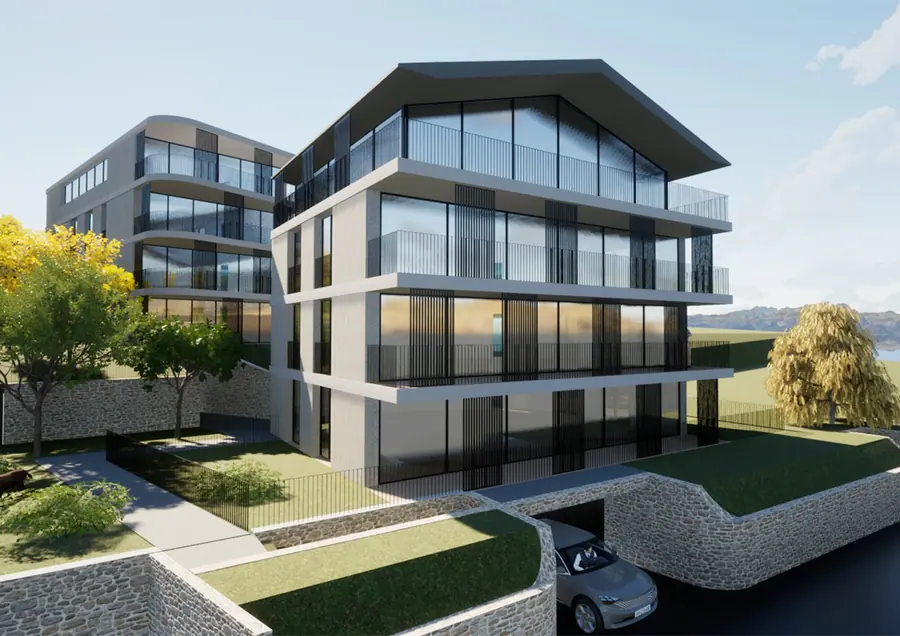
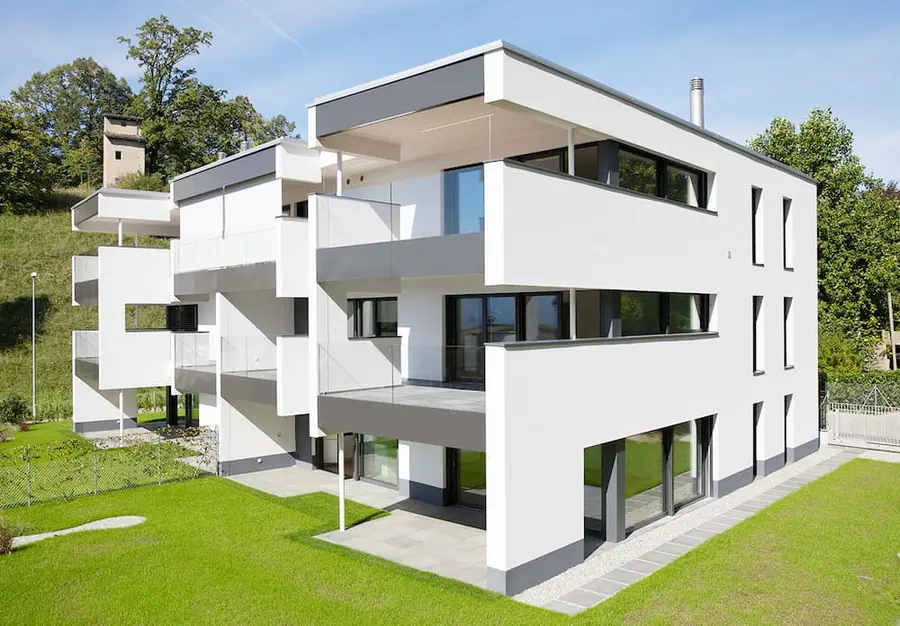
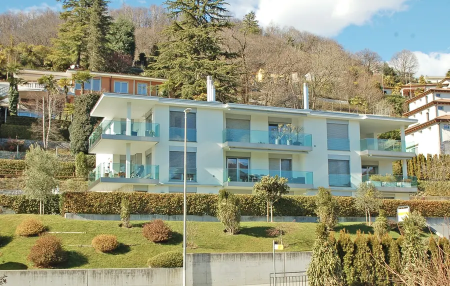

In Archi Trend crediamo che un buon progetto inizi molto prima del primo disegno. Parte dal capire il luogo, chi ci vivrà e il valore che la casa dovrà avere nel tempo. Per questo progettiamo con uno sguardo al mercato, insieme a chi poi costruisce e vende.
Conosci lo studioPrima di disegnare, guardiamo i volumi.
Ogni progetto parte da un modello semplice: quanto costruire, come disporlo sul terreno, dove mettere terrazze e vetrate per luce e vista. Gira il modello e guardalo da ogni lato.
- 01Volumi e altezze ammesse
- 02Orientamento, luce e vista
- 03Terrazze, giardino e accessi
Modello di esempio, non un progetto reale.
 Trascina per ruotare
Trascina per ruotareServizi di architettura, dall'idea alle chiavi
Puoi affidarci tutto il percorso o solo la parte che ti serve.

Progettazione residenziale
Case, ville e palazzine pensate su misura per il terreno, per chi ci abiterà e per il valore dell'immobile nel tempo.
Scopri il servizio
Licenze e domanda di costruzione
Prepariamo la documentazione e seguiamo la domanda di costruzione con il Comune, fino alla licenza.
Scopri il servizio
Direzione lavori
Seguiamo il cantiere fino alla consegna, con Edil Trend o con l'impresa che scegli tu.
Scopri il servizio
Perizie e valutazioni tecniche
Valutazioni dello stato di un immobile per chi deve comprare, vendere, ristrutturare o investire.
Scopri il servizio
Ristrutturazioni
Progetti che ridanno qualità e valore a case, appartamenti e stabili esistenti.
Scopri il servizio
Interni
Spazi, luce e materiali degli ambienti, dalla distribuzione delle stanze alle finiture.
Scopri il servizioProgetti del gruppo
Residenze progettate e realizzate dal Gruppo New Trends nel Luganese.

Residenza Green Horse
Muzzano · 12 appartamenti
Vedi il progetto
Residenza Optima
Montagnola · 6 appartamenti
Vedi il progetto
Residenza Miracolli
Savosa · Porza · 8 appartamenti
Vedi il progettoHai un terreno o un immobile? Ti diciamo cosa ci si può costruire.
Tutti i progettiChe progetto hai?
Cinque domande veloci: tipo di progetto, terreno, Comune, budget e tempi. Le alleghiamo alla tua richiesta, così al primo contatto sappiamo già da dove partire.
- 01Nessun dato personale fino all'ultimo passo
- 02Puoi cambiare risposta quando vuoi
- 03Ti risponde una persona dello studio
Che progetto hai in mente?
Hai già il terreno o l'immobile?
In quale Comune?
Che budget hai in mente, tutto compreso?
Quando vorresti iniziare?
Ecco il tuo progetto, in breve
Lo alleghiamo alla richiesta: così al primo contatto sappiamo già da dove partire.
Il questionario ha bisogno di JavaScript. Puoi scriverci o chiamarci: +41 91 921 00 31 · info@new-trends.ch · WhatsApp
Dall'idea al cantiere, in quattro fasi
- FASE 01
Ascolto e sopralluogo
Ci incontriamo, visitiamo il terreno o l'immobile e mettiamo in chiaro esigenze, budget e tempi. Il primo incontro è senza impegno.
- FASE 02
Concept
Prime idee, volumi e materiali: ti mostriamo come potrebbe essere, con una stima dei costi già dall'inizio.
- FASE 03
Progetto e licenza
Sviluppiamo il progetto definitivo e seguiamo la domanda di costruzione con il Comune.
- FASE 04
Direzione lavori e consegna
Seguiamo il cantiere fino alla consegna, con Edil Trend o con l'impresa che preferisci.
Domande frequenti
Le domande che ci fanno più spesso su progetto, tempi e costi.
Quanto costa il primo incontro?
Il primo incontro è senza impegno: ascoltiamo il progetto, guardiamo insieme terreno o immobile e ti diciamo come possiamo aiutarti.
Posso sapere cosa si può costruire prima di comprare un terreno?
Sì. Verifichiamo piano regolatore, zona, indici, distanze e vincoli e, in genere con un primo studio dei volumi, ti diciamo cosa ci si può realizzare. È il momento migliore per coinvolgerci.
Come si calcolano gli onorari dell'architetto?
Di solito per fasi di prestazione, dal progetto preliminare alla direzione lavori, spesso con riferimento alle norme SIA. L'onorario può essere una percentuale sul costo dell'opera, un importo forfettario o a tempo: si concorda nell'offerta scritta, prima di iniziare.
Quali documenti servono per la domanda di costruzione?
In genere il modulo ufficiale, i piani del progetto (situazione, piante, sezioni e facciate), l'estratto del piano catastale, il calcolo degli indici e una relazione tecnica; secondo l'intervento anche documenti su energia, antincendio o smaltimento delle acque. L'elenco esatto lo stabiliscono il Comune e il Cantone.
Dovete costruire per forza con Edil Trend?
No. Con Edil Trend hai un solo gruppo dal progetto alle chiavi, ma possiamo dirigere i lavori anche con l'impresa che scegli tu.
Cosa succede dopo che ci contatti
Nessun impegno finché non hai un'offerta scritta e chiara.
- 01
Ti richiamiamo
Ti chiamiamo per conoscere il progetto e capire da dove partire.
- 02
Primo incontro
In studio a Lugano o sul posto, senza impegno: guardiamo insieme terreno, immobile o idea.
- 03
Proposta scritta
Ti diciamo cosa serve, in quali fasi e ti mandiamo un'offerta scritta per le prestazioni.
- 04
Si parte
Se decidi di andare avanti, iniziamo dalla fase che ti serve: anche solo una.
“Progettare con uno sguardo al mercato: ogni scelta deve sostenere il valore e il risultato dell'immobile.”
New Trends nasce a Lugano nel 1991. Oggi il gruppo riunisce New Trends SA per la consulenza e l'intermediazione immobiliare, Archi Trend SA per la progettazione ed Edil Trend SA per la realizzazione.

Prenota una consulenza gratuita
Il primo incontro è senza impegno: raccontaci terreno, immobile o idea e ti diciamo come possiamo aiutarti.
Senza impegno · +41 91 921 00 31 · Via Pretorio 11, 6900 Lugano